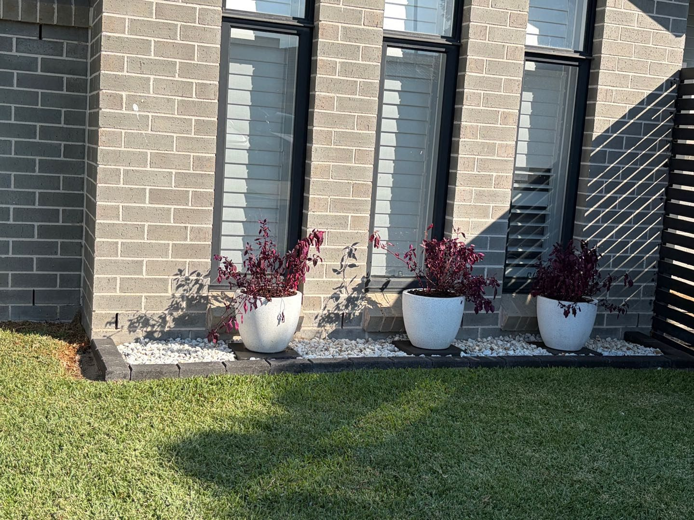
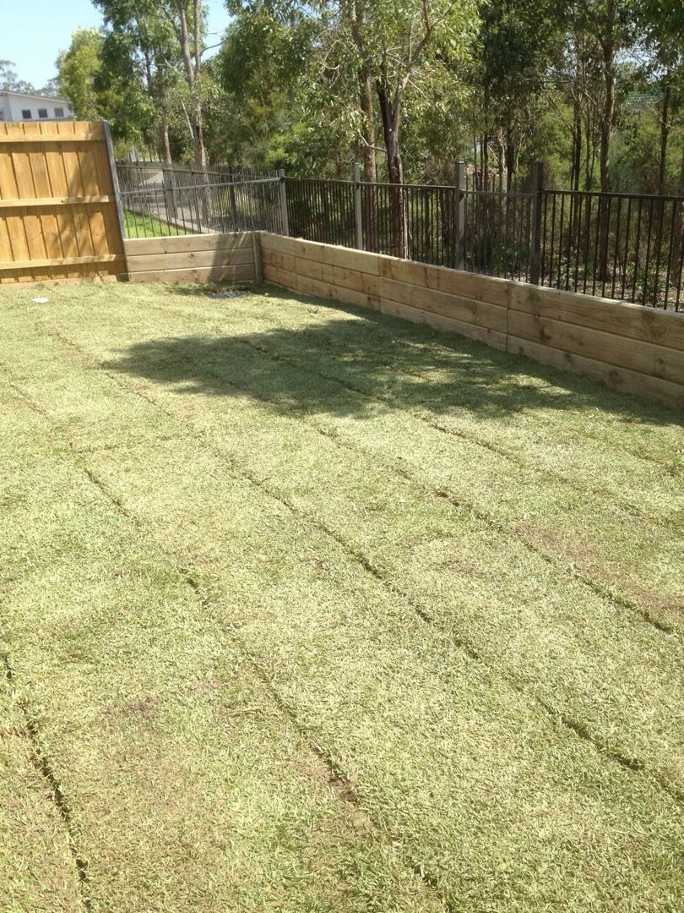
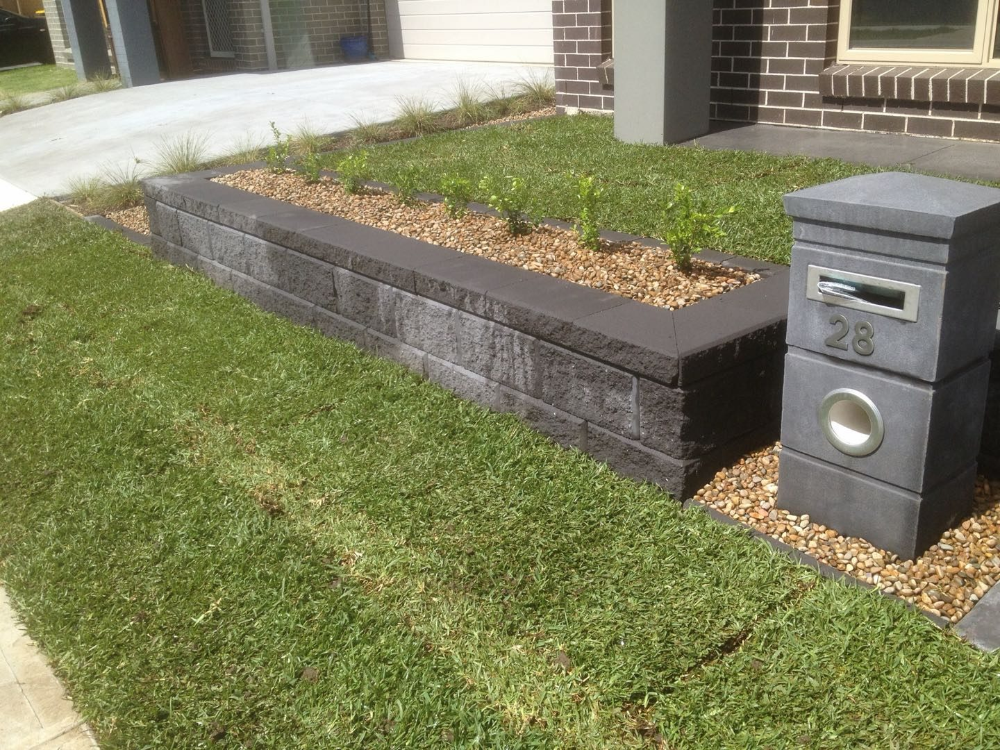
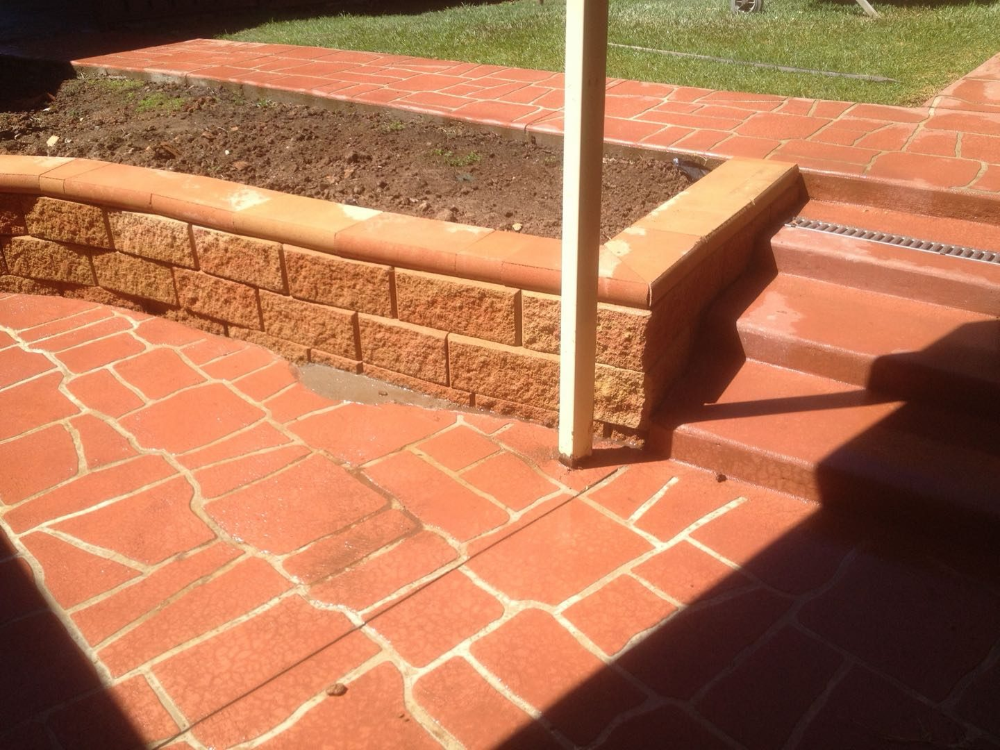
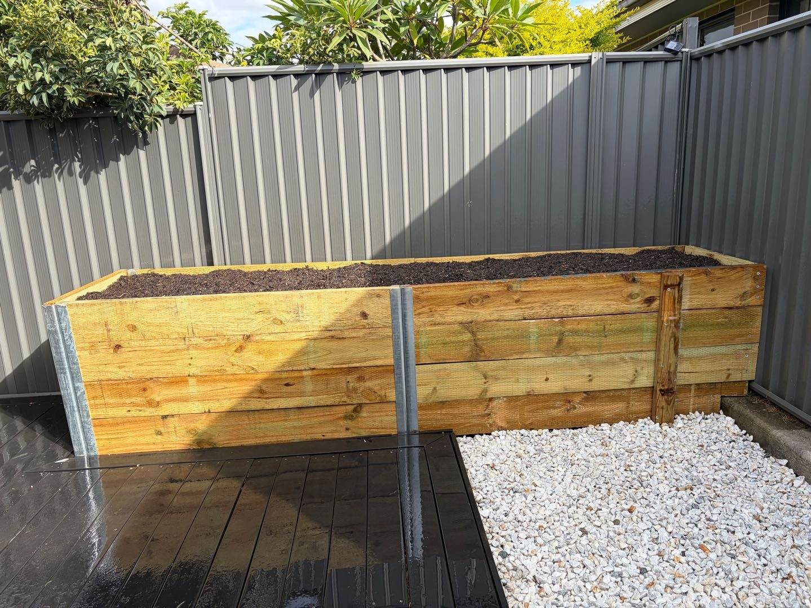
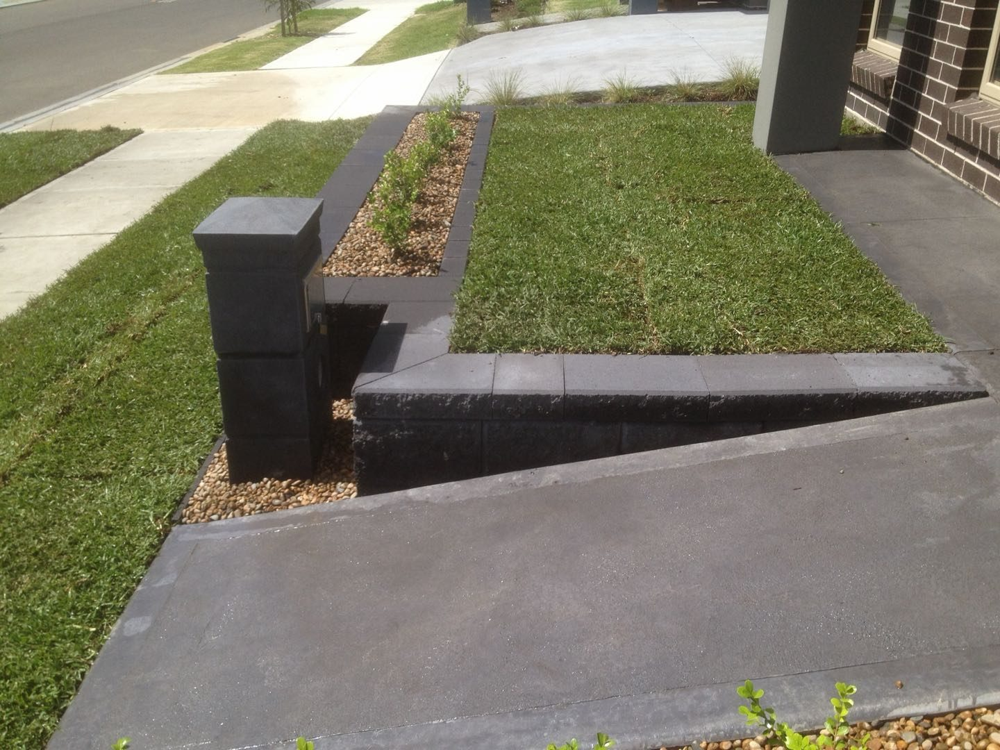

Services
Gardening, lawns and landscaping.
Everything below is listed on George’s hipages and ServiceSeeking profiles. Call or email to talk about what your garden needs.

01
Garden care
Day-to-day garden work.
- General gardening
- Garden maintenance
- Garden clean-ups
- Weeding
- Mulching
- Fertilising
- Hedge trimming and cutting

02
Lawns and turf
Mowing, turf and lawn repair.
- Lawn mowing
- Turf laying
- Lawn restoration and repair
- Disease and pest management

03
Landscaping
Garden design and landscape projects.
- Landscape design
- Landscaping
- Structural landscaping
- Garden landscaping
- Backyard renovations
- Landscaping preparation
- Vertical gardens
- Garden fish ponds

04
Walls, paving and gravel
Retaining walls, paving and gravel.
- Stone retaining walls
- Timber retaining walls
- Basic paving
- Gravel
05
Watering
Sprinklers and irrigation.
- Sprinklers
- Drip irrigation systems
- Garden irrigation systems
- Grey water systems
06
Removal and extras
Green rubbish, stumps and basic garden jobs.
- Garden and green rubbish removal
- Tree stump removal
- Basic garden jobs
More photos
From his hipages gallery.




Not sure which one fits?
Call or email George and describe the job.